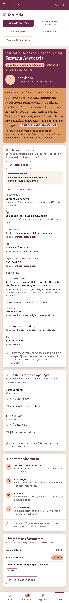

Dados completos
Santana Advocacia, sociedade individual, em Salvador. Disco “5 de 5”; no âmbar, o parágrafo da contratada como sai no contrato. Cada dado diz em uma linha onde sai (contrato, procuração, petições, recibo e carnê). Os contatos com a equipe T3jus ficam num bloco à parte; ao lado, onde os dados entram e o resumo dos advogados.
Abrir: escritorio.html?estado=escritorio-completo (estreite a janela para ver o celular)